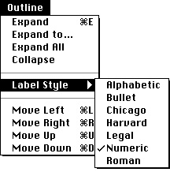

Creating a Hierarchical Menu
A hierarchical menu is a menu that has a submenu attached to one or more of its menu items. Submenus can be useful when your application needs to offer additional choices to the user without taking up extra space in the menu bar. If you use a submenu in your application, use it to give the user additional choices or to choose attributes, not additional commands.A menu item of a pull-down menu is the title of the attached submenu. A menu item that has a triangle facing right in the location of the keyboard equivalent identifies
that a submenu is attached to the menu item. The title of a submenu should represent
the choices it contains. Figure 3-32 shows a menu with a submenu whose menu title is Label Style.Figure 3-32 A menu item with a submenu

When a user drags the cursor through a menu and rests it on a menu item with a submenu attached to it, the Menu Manager displays the submenu after a brief delay.
The title of the submenu remains highlighted while the user browses through the submenu; the Menu Manager unhighlights the menu title of the submenu when the
user releases the mouse button.Your application is responsible for placing any marks next to the current choice or attribute of the submenu. For example, in Figure 3-32 the application placed the checkmark next to the Numeric menu item to indicate the current choice. If the user makes a new choice from the menu, your application should update the menu items accordingly.
You can specify that a particular menu item has a submenu by identifying this characteristic (using the
hierarchicalMenuconstant) when you define the menu item in its'MENU'resource. You cannot assign keyboard equivalents to a menu item that has a submenu. (You can define keyboard equivalents for the menu items in the submenu, but this is not recommended.) You identify the menu ID of the submenu in place of the marking character in the menu item's resource description. Thus, a menu item that has a submenu cannot have a marking character and cannot have a keyboard equivalent.To insert a submenu into the current menu list, you must use the
InsertMenuprocedure. TheGetNewMBarfunction does not read in the resource descriptions of
any submenus.Listing 3-7 shows the
'MENU'resource for an application-defined menu called Outline. The Outline menu contains a number of menu items, including the Label Style menu item. The description of this menu item contains the constanthierarchicalMenu, which indicates that the item has a submenu. This menu item description also contains the menu ID of the submenu (defined by themSubMenuconstant). The menu ID of a submenu of an application must be from 1 through 235; the menu ID of a submenu of a desk accessory must be from 236 through 255.The submenu is defined by the menu with the menu ID specified by the Label Style menu item. You define the menu items of a submenu in the same way as you would a pull-down menu (except you shouldn't define keyboard equivalents for items in a submenu, and you shouldn't attach a submenu to another submenu).
Listing 3-7 Rez input for a description of a hierarchical menu with a submenu
#define mOutline 135 #define mSubMenu 181 resource 'MENU' (mOutline, preload) { mOutline , /*menu ID*/ textMenuProc, 0b0000000000000000000000000010000, enabled, "Outline", /*menu title*/ { /*menu items*/ "Expand", noicon, "E", nomark, plain; "Expand To...", noicon, nokey, nomark, plain; "Expand All", noicon, nokey, nomark, plain; "Collapse", noicon, nokey, nomark, plain; "-", noicon, nokey, nomark, plain; /*the Label Style item has a submenu with menu ID mSubMenu*/ "Label Style", noicon, hierarchicalMenu, mSubMenu, plain; "-", noicon, nokey, nomark, plain; "Move Left", noicon, "L", nomark, plain; "Move Right", noicon, "R", nomark, plain; "Move Up", noicon, "U", nomark, plain; "Move Down", noicon, "D", nomark, plain } }; resource 'MENU' (mSubMenu , preload) { mSubMenu , /*menu ID*/ textMenuProc, 0b0000000000000000000000001111111, enabled, "Label Style", /*menu title (ignored--defined */ /* by parent menu item text)*/ { /*menu items*/ "Alphabetic", noicon, nokey, nomark, plain; "Bullet", noicon, nokey, nomark, plain; "Chicago", noicon, nokey, nomark, plain; "Harvard", noicon, nokey, nomark, plain; "Legal", noicon, nokey, nomark, plain; "Numeric", noicon, nokey, nomark, plain; "Roman", noicon, nokey, nomark, plain } };When you useGetNewMBarto read in menu descriptions and create a new menu list,GetNewMBarrecords the menu ID of any submenu in the menu record but does not read in the description of the submenu. To read a description of a submenu, use theGetMenufunction. To actually insert a submenu into the current menu list, you must use theInsertMenuprocedure.When needed, your application can use the
GetMenufunction to read a description of the characteristics of a menu from a'MENU'resource. TheGetMenufunction creates a menu record for the menu, allocating space for the menu record in your application's heap. TheGetMenufunction creates the menu and menu items (and fills in the menu record) according to its'MENU'resource. TheGetMenufunction does not insert the menu into a menu list. When you're ready to add it to the current menu list, use theInsertMenuprocedure.Listing 3-8 uses the
GetMenufunction to read the description of a submenu and uses theInsertMenuprocedure to insert the menu into the current menu list.Listing 3-8 Creating a hierarchical menu
PROCEDURE MyMakeSubMenu (subMenuResID: Integer); VAR subMenu: MenuHandle; BEGIN subMenu := GetMenu(subMenuResID); InsertMenu(subMenu, -1); END;To insert a submenu into the current menu list using theInsertMenuprocedure, specify -1 in the second parameter to insert the menu into the submenu portion of the menu list. As the user traverses menu items, if a menu item has a submenu theMenuSelectfunction looks in the submenu portion of the menu list for the submenu; it searches for a menu with a defined menu ID that matches the menu ID specified by the hierarchical menu item. If it finds a menu with a matching menu ID, it attaches the submenu to the menu item and allows the user to browse through the submenu.